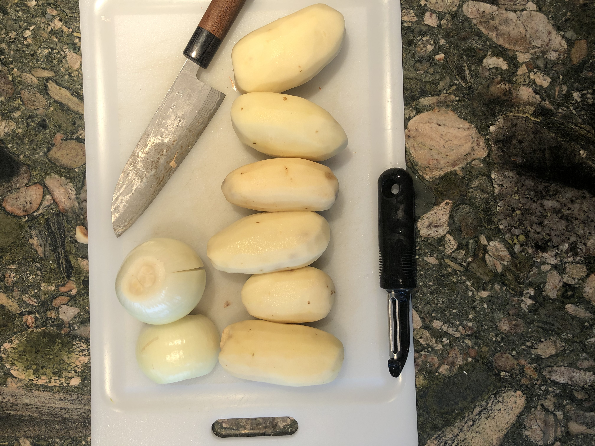
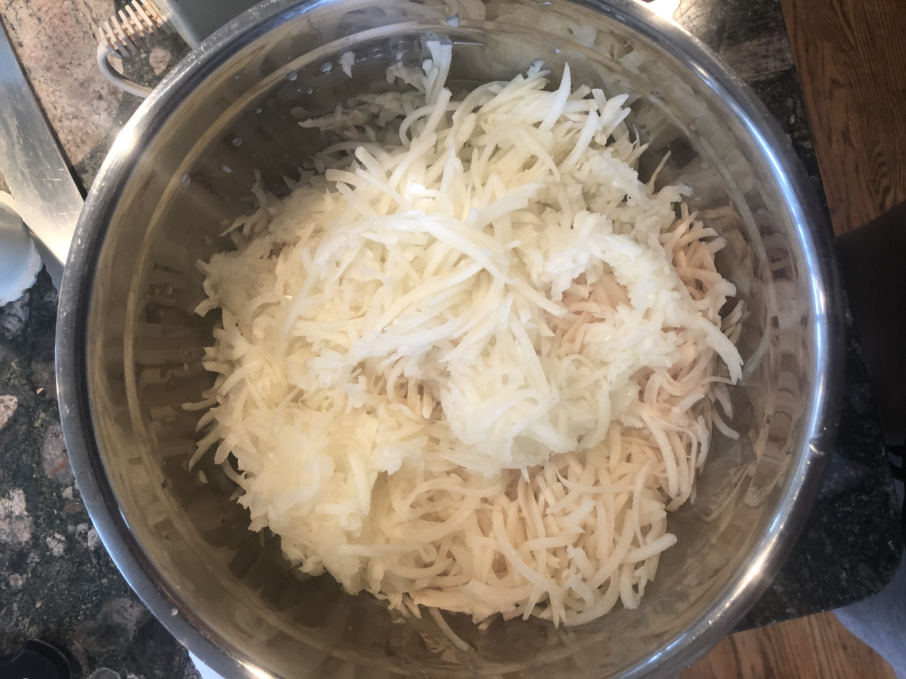
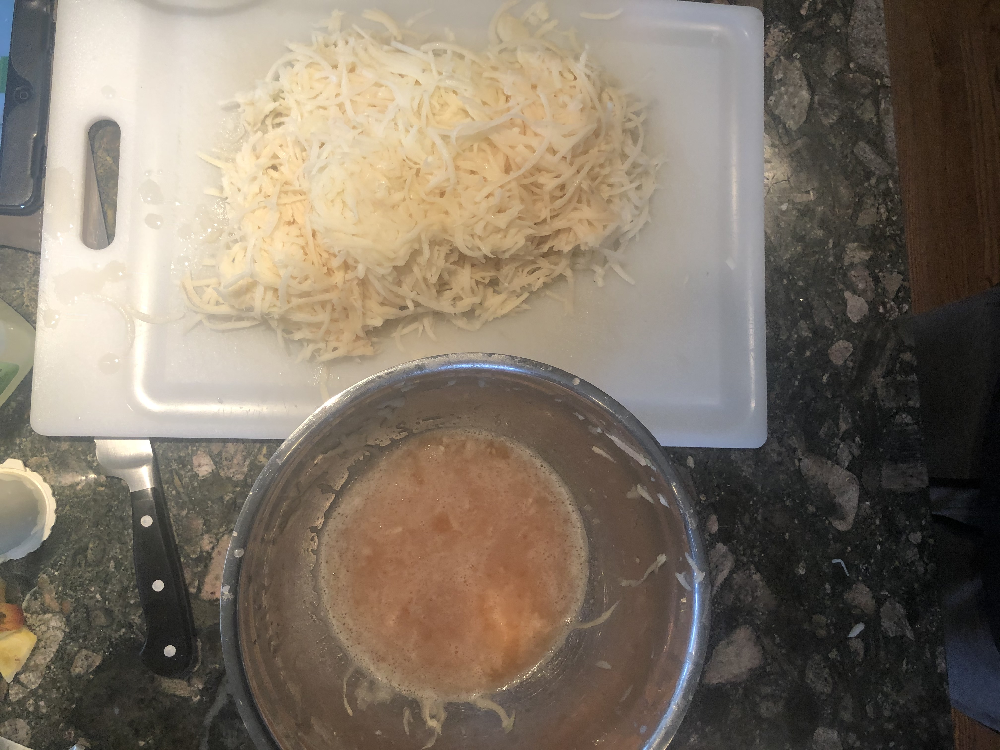
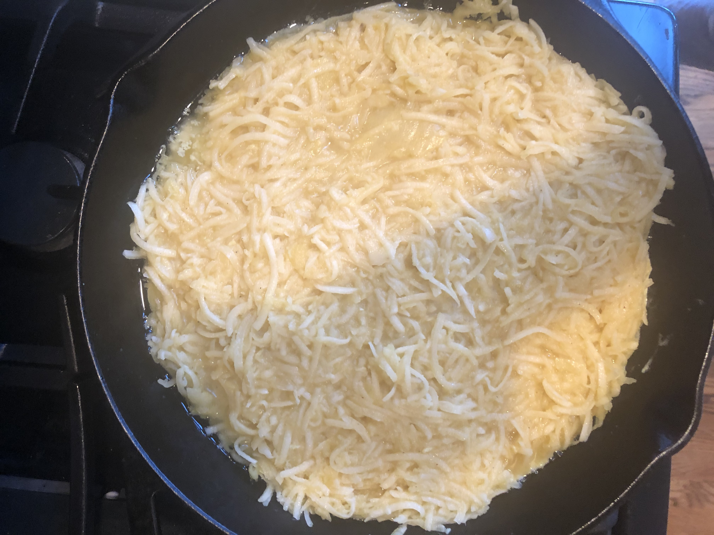
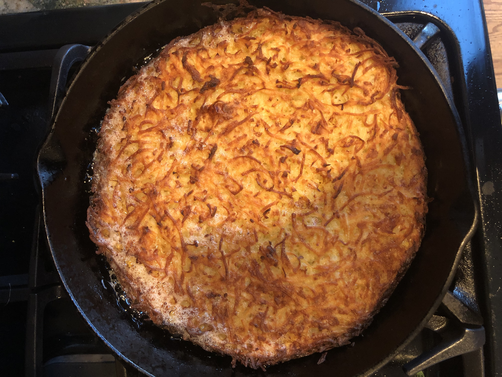
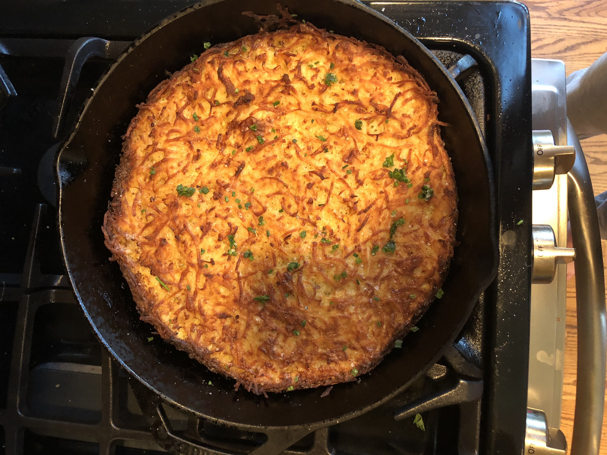

First,
Preheat oven to 425 degrees. Peel all the potatos and onions (you can add more or less onions depending on persoanl taste)
Then,
Using a food processor (idealy) or by a box grater (not ideal) grate the potatoes and onions into a large bowl
Next,
Working with your hands and a bit of time, squeeze as much water out of the potatoes and onions. Transfer the dry potatoes/onions into a large bowl (it can be the same bowl just make sure to get rid of the water first). Don't be afraid to do multiple rounds of squeezing to ensure as much water is removed.
After,
Add the eggs and 6 tablespoons of melted butter. Add plenty of salt and pepper and mix well. Heat another 2 tablespoons of butter over a skillet or pan at medium heat while doing this. Once mixed, place the potato mixture gently into the skillet, careful not to pack it in tightly (you want the kugel to be light and airy)
Finally,
Cook the kugel until it is golden brown, about 10 to 12 minutes. Then add the remaining 2 tablespoons of butter to the top of the kugel and place in oven for 45 to 50 minutes. Kugel should be a deep golden brown with the edges being crisp and wavey and the potatos being tender.
And... Enjoy!
Remove from oven and allow for coolage as skillet will be hot. Top witrh chopped chives and more salt and pepper. Slice, serve, and enjoy!
